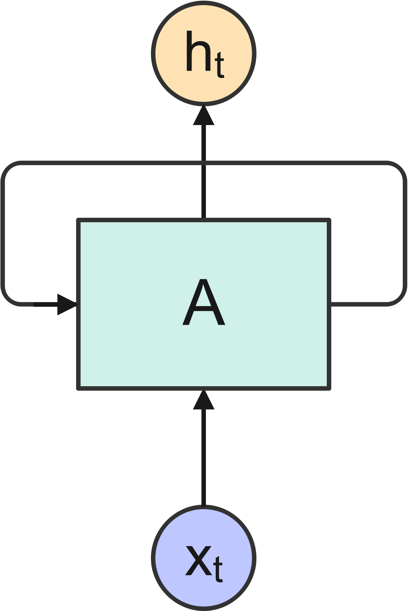
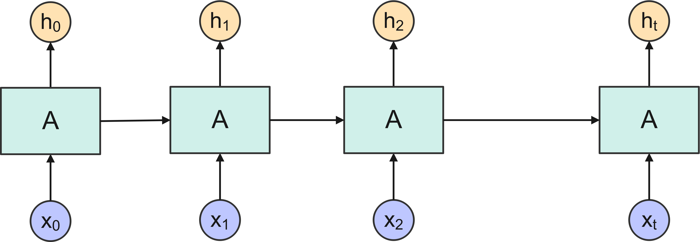
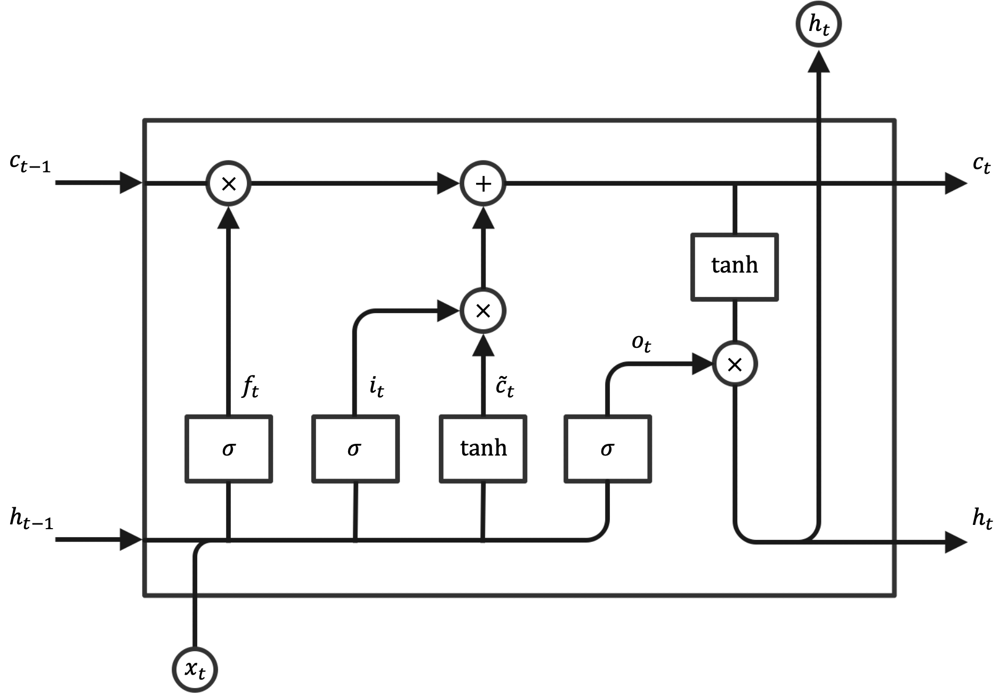
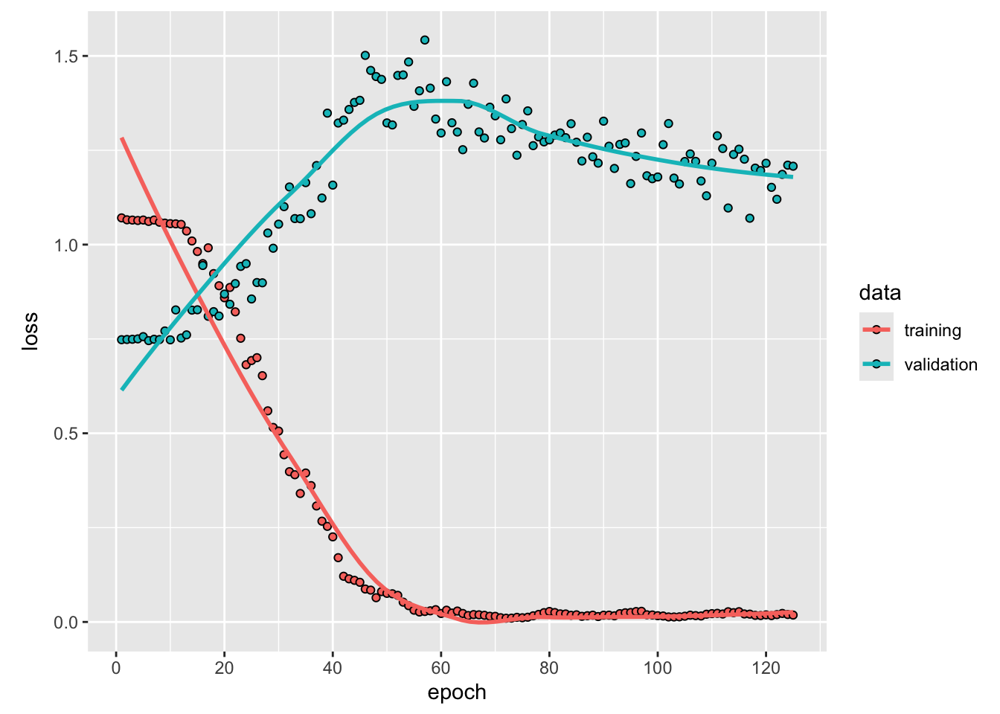

Using Long Short Term Memory (LSTM) in R for time series forecasting
time series
In mid 2017, R launched Keras in R, a comprehensive library which runs on top of powerful numerical platforms, such as TensorFlow and Theano. This package helped R not to lag behind Python anymore when managing Deep Learning (DL) frameworks and libraries. Models supported by the R Keras package include Recurrent Neural Network (RNN), Long Short-Term Memory (LSTM), Convoluted Neural Network (CNN), Multilayer Perceptron (MLP), among others. In this post, I discuss an example of using LSTM for time series forecasting using code written in R.
Author
Angelo Maria Sabatini
Published
March 11, 2025
Long Short Term Memory (LSTM) networks are special kind of Recurrent Neural Networks (RNNs). LSTM networks can be used for time series forecasting, because of their ability to capture and learn the long-term dependencies, such as trends or patterns persisting over time, that are frequently exhibited by time series. In particular, LSTM networks can retain such information on long term behavior of time series much better than ordinary RNNs can do.
Figure 1 shows the cell of an ordinary RNN, \(A\), which outputs a value \(h_t\) in response to the input \(x_t\).

Figure 1: Cell of an ordinary RNN.
Since the cell has a loop into it, information is allowed to persist through multiple steps of the network. An RNN can be thought as multiple copies of this cell, each copy passing a message to the next one, as shown in Figure 2. It is exactly this ability to retain information over multiple steps of the network that provides an RNN with the ability, in principle, to learn long-term dependencies of the input sequence.

Figure 2: An unrolled RNN.
LSTM are, in this regard, just a special kind of RNN, with much better capabilities to learn the long-term dependencies, compared with an ordinary RNN. Figure 3 shows that each repeating cell in an LSTM has four neural network layers (sigmoid \(\sigma\) and hyperbolic tangent \(\text{tanh}\)). In this figure each line carries a vector, from the output of one node to the input of others. Pointwise operations of multiplication and addition coexist with the learned neural network layers.

Figure 3: Cell of an LSTM network.
The cell state is the horizontal line at the top of the diagram. The flow of information along the cell state is controlled by the neural network layers, which learn which information to pass and which information to forget through a number of gates:
The forget gate decides what information to discard from the cell state:
It is worth noting that the structure of the LSTM cell indicated in Figure 3 is just one of many variants that have been proposed in the literature.
Load the libraries and the dataset
For demonstration purposes, the historical end-of-day stock price data \(p_t\) for Apple Inc. are considered (period: 01/01/2022-06/30/2024). The quantmod package in R can be used to download this data from Yahoo Finance.
Code
library(tidyverse)library(quantmod)library(keras)tensorflow::set_random_seed(1234)# Define the stock symbol for Apple Inc. and specifiy the date rangestock_symbol <-"AAPL"start_date <-as.Date("2021-12-31")end_date <-as.Date("2024-06-30")# Download data from Yahoo Finance using quantmodgetSymbols(stock_symbol, src ="yahoo", from = start_date, to = end_date) -> a# Set data as dataframeapple_data <-data.frame(date =as.Date(index(AAPL)), close =as.numeric(Cl(AAPL)))# Compute log-returns from end-of-day stock price, adjusting for datelog_return <-diff(log(apple_data$close))date <- apple_data %>%pull(date)date <- date[-1]apple_data <-data.frame(date = date, log_return = log_return)
Data preparation
Transform data to stationary
Usually, this is done by getting the difference between two consecutive values in the series. This transformation, commonly known as differencing, is considered in traditional time series models, such as ARIMA and GARCH. For a short discussion about non-stationarity in time series and statistical tests that can be used to detect whether a time series is stationary or not, see my previous post (here). There are different approaches in the literature regarding whether LSTM networks can be applied to stationary or non-stationary time series (here). For the example discussed in this post, I decided to analyze the log-returns\(z_t\) of the end-of-day stock prices:
The time series of log-returns plotted in Figure 4 is to be regarded as being stationary.
Data normalization
For better learning, LSTM needs normalized data, i.e., data that are centered by the mean and scaled by the standard deviation. This step can be implemented using the scale() function of base R; the function get_scaling_factors() stores the scaling factors used for data normalization. When the original data scale needs to be restored at the time of making predictions, the function reverse_data() can be used.
Code
get_scaling_factors <-function(data) { out <-c(mean =mean(data), sd =sd(data))return(out)}reverse_data <-function(data, scaling_factors) { temp <- (data*scaling_factors[2]) + scaling_factors[1] out <-as.matrix(temp)return(out)}# Data processing using differencing with diff() and normalization with scale() scaling_factors <-get_scaling_factors(apple_data$log_return)log_return <-scale(apple_data$log_return)log_return <-data.frame(log_return)
Split dataset in training and testing sets
LSTM works in a supervised learning mode, with a predictor \(\textbf{X}\) and a target variable \(Y\). The time series needs therefore to be transformed by lagging the series, so as to have the values at times \((t−k),k=1,\cdots,L\) as the input and the value at time \(t\) as the ouput, for a \(L\)-step lagged dataset: \(\textbf{X}_t=[x_{t-L},x_{t-L+1},\cdots,x_{t-1}]\) and \(Y_t=x_t\). Here, I choose \(L=7\). Moreover, unlike in most analysis where training and testing data sets are randomly sampled, with time series data the order of the observations does matter. The following code splits the first 80% of the series as training set and the remaining 20% as testing set.
Code
# Define the train and test splitsplit_data <-function(series, lag) { lag <- lag+1 data_raw <-as.matrix(series) # convert to matrix (series is a data frame) data <-array(dim =c(0, lag, ncol(data_raw)))# Create all possible sequences of length lagfor (i in1:(nrow(data_raw)-lag)) { data <-rbind(data, data_raw[i:(i+lag-1), ]) } train_set_size <-round(0.8*nrow(data)) test_set_size <-nrow(data)-train_set_size x_train <- data[1:train_set_size, 1:(lag-1)] y_train <- data[1:train_set_size, lag] x_test <- data[(train_set_size+1):nrow(data), 1:(lag-1)] y_test <- data[(train_set_size+1):nrow(data), lag]return(list(x_train = x_train, y_train = y_train,x_test = x_test, y_test = y_test))}# Divide data into train and testlag <-7# Choose sequence lengthsplit_data <-split_data(log_return, lag)x_train <- split_data$x_trainy_train <- split_data$y_trainx_test <- split_data$x_testy_test <- split_data$y_testn_train <-dim(x_train)[1]n_test <-dim(x_test)[1]
Model construction
It is important to consider that the input to every LSTM layer must be three-dimensional. The three dimensions of the input are:
Samples This dimension indicates how many samples are included in each batch; in this example, we have 494 samples for the training data and 123 for the testing data.
Time Steps This dimension indicates how many points of observation are included in each sample; in this example, we have 7 points.
Features This dimension indicates how many features are in each observation at each time step; for a univariate case, like in this example, we have just one feature.
Code
input_dim <-1# Reshape the training and test data to have a 3D arrayx_train <-array_reshape(x_train, c(n_train, lag, input_dim))x_test <-array_reshape(x_test, c(n_test, lag, input_dim))
Define the model
A sequential model is defined using keras_model_sequential():
Code
# Decide structurehidden_dim <-32num_layers <-2output_dim <-1# Define the LSTM model using Kerasmodel <-keras_model_sequential() %>%layer_lstm(units = hidden_dim, input_shape =c(lag, input_dim), return_sequences =TRUE) %>%layer_lstm(units = hidden_dim) %>%layer_dense(units = output_dim) model
The LSTM input layer is defined by the input_shape argument on the first hidden layer, which takes a tuple of two values that define the number of time steps and features.
Compile and fit the model
The model is compiled in-place using compile(), which specifies the loss function (mean squared error) and the optimizer (Adam), with learning rate assigned over each update. The model is then fit using the training data and validated on the testing data. The training history is stored in the history object.
Code
num_epochs <-125batch <-16model %>%compile(loss ="mean_squared_error", optimizer =optimizer_adam(learning_rate =0.01))# Train the model on the training datahistory <- model %>%fit(x_train, y_train, epochs = num_epochs, batch_size = batch, validation_data =list(x_test, y_test),verbose =FALSE,shuffle =FALSE)

Figure 5: Loss over the number of epochs.
The loss over the training epochs is shown in Figure 5. The validation mean squared error is 1.2078.
Extract predictions
Figure 6 shows the results of the forecasting exercise using LSTM.
Code
# Extract predictions from the estimated modely_train_pred <- model %>%predict(x_train, verbose =FALSE)y_test_pred <- model %>%predict(x_test, verbose =FALSE)# Rescale the predictions and original valuesy_train_pred_orig <-reverse_data(y_train_pred, scaling_factors)y_train_orig <-reverse_data(y_train, scaling_factors)y_test_pred_orig <-reverse_data(y_test_pred, scaling_factors)y_test_orig <-reverse_data(y_test, scaling_factors)# Shift the predicted values to start from where the training data predictions endy_test_pred_orig_shifted <-c(rep(NA, n_train), y_test_pred_orig[, 1])y_train_pred_orig <-c(y_train_pred_orig, rep(NA, n_test))